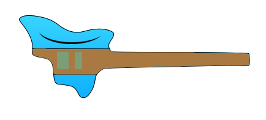
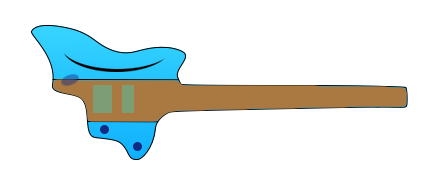

Headless Prototype Oct 15
Crazy
Batshit crazy
Inspiration
Shape
{kind=link}
Note, on this design I don't need to account for the brige tuners since I'm using the FR. This is when I first knew I would try this rather than buy a headless bridge.
But where does the jack go? On back. I know a guy who knows a guy :P
Wood / transition
- Too flat but cool http://strandbergguitars.com/27-varberg/
- I like how the the color transitions where the wood meets
- Wondering how I can do that around the bouts using the transition from mahagony to maple
Overlay
Until I get to play with a prototype, I imagine that distance being broken into exact thirds for each rest. Unless there is a reason for one being a different size - bottom one bigger for example.
1 Rita and one shot version
Forgive the colors the tequilla made me do it.
I'm liking this, it is different, no? Probably a reason for that I suppose but, regardless, I like it and hope to bring it to life.
Note the ugly brown 'through neck' area, the spalted maple (top, mahagony otherwise) - I imagine it being thickest at the center and then fanning out to the wings using that smokey purple - if you can get me close I can finish with the finish, which is fun for me.
The brown indicates spalted maple - including the finger board.
I'm conflicted about the head. I suppose it does serve a function, for hanging and tuner but want to leave it off - out of principle :P
I want to get this in at less than 5 lbs.
I was playing my minimized Fender today. I really like it mostly because of the (lack of) weight. It makes a difference. With this new one, I know, the scale will be longer. I'm ok with it. My munchkin hands have learned to cheat, they will just have to learn to cheat more :P
I'm not sure about controls. But there is plenty of room for fewer of them. LOL. That's ok by me.
I'm going to mock it up and try it on. Candid feedback appreciated.